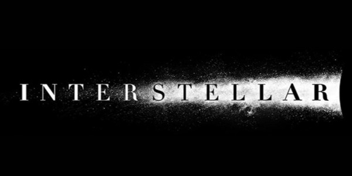

好きな曲・映画
Paint it Black
Free bird
Berra ciao
Inter Stellar
- Inter stellar wikipediaページ
- クリストファー・ノーラン監督、叙事詩的SF映画
あらすじ
気候変動により巨大な砂嵐が日常的に地上を襲い、
疫病により作物が次々枯れるようになってしまった地球を救うため。
主人公のクーパーと三人の宇宙飛行士が新たなる新天地を探しに別に銀河へ向かう。